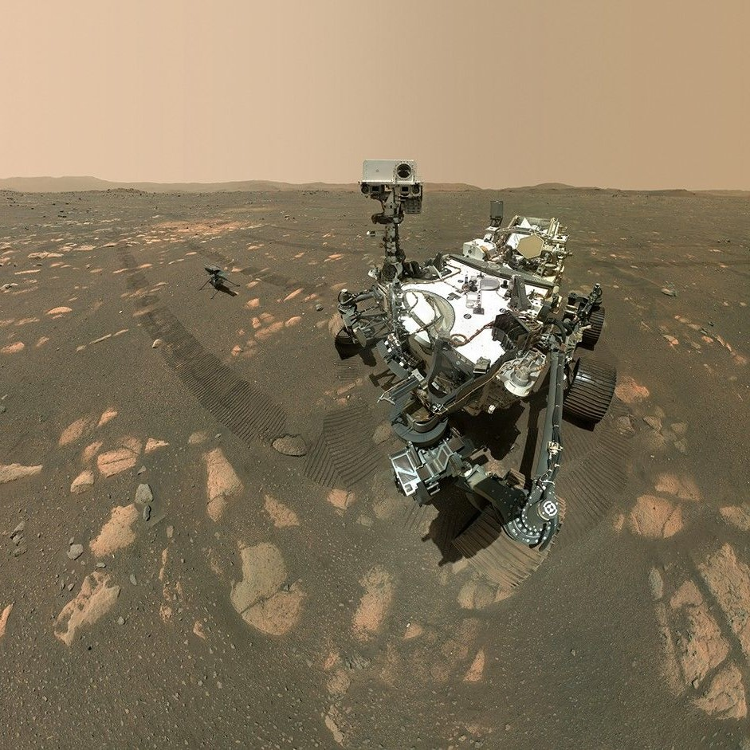
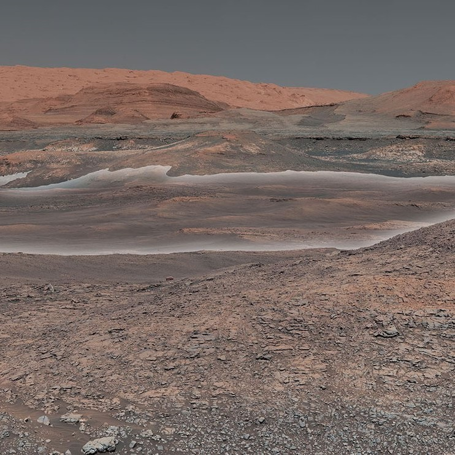

NASA has two operational rovers on Mars
Curiosity landed on Mars in 2012 and Perseverance landed in 2021.

Curiosity and Perseverance have taken over 150,000 images
These images are used for researching Mars's surface, navigation, and inspecting the rovers themselves.

Both rovers have advanced our understanding of Mars
Perseverance has discovered volcanic rock on the surface of Mars and Curiosity has found signs that Mars could have supported life.
